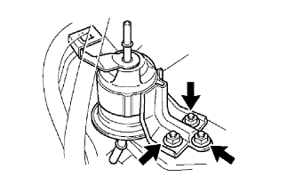
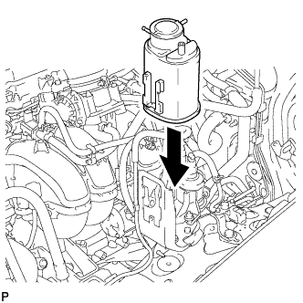
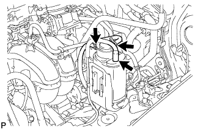

BỘ LỌC NHIÊN LIỆU > LẮP |
| 1. LẮP BỘ LỌC NHIÊN LIỆU |
|  |
Lắp bộ lọc nhiên liệu bằng 3 đai ốc.
| 2. LẮP ỐNG NHIÊN LIỆU CHÍNH |
Lắp cút nối vào ống phía dưới. Hãy ấn 2 phần vào với nhau một cách chắc chắn đến khi nghe thấy tiếng "tách". Sau đó cài các vấu hãm vào cút nối bằng cách ấn nắp của cút nối xuống.
Kiểm tra rằng cút nối và ống phía dưới được nối chắc chắn bằng cách thử kéo chúng ra.
Lắp vòng đệm ống nhiên liệu.
| 3. NỐI ĐƯỜNG ỐNG NHIÊN LIỆU |
Lắp cút nối vào ống phía trên. Hãy ấn 2 phần vào với nhau một cách chắc chắn đến khi nghe thấy tiếng "tách".
Kiểm tra rằng cút nối và ống phía trên được nối chắc chắn bằng cách thử kéo chúng ra.
Lắp ống vào kẹp.
| 4. LẮP BỘ LỌC THAN HOẠT TÍNH |
|  |
Cài khớp bộ lọc khí vào giá bắt.
|  |
Lắp 3 ống vào bộ lọc khí xả.
| 5. NỐI CÁP ÂM VÀO CỰC ÂM ẮC QUY |
| 6. TIẾN HÀNH THIẾT LẬP BAN ĐẦU |
Tiến hành thiết lập ban đầu (Xem trang Kích chuột vào đây).
| 7. KIỂM TRA RÒ RỈ NHIÊN LIỆU |
Nối máy chẩn đoán với giắc DLC3.
Bật khoá điện ON.
Bật công tắc chính của máy chẩn đoán ON.
Hãy chọn thử kích hoạt và truy nhập và menu sau: Powertrain / Engine and ECT / Active Test / Control the Fuel Pump / Speed.
Kiểm tra rò rỉ nhiên liệu.
Kiểm tra rằng không có rò rỉ nhiên liệu trong hệ thống nhiên liệu sau khi tiến hành bảo dưỡng.